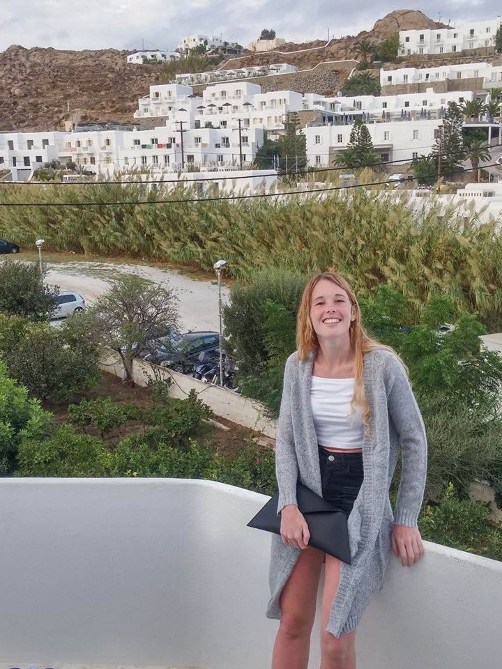

Belen Weisheim
Arquitecta graduada de la Universidad Nacional de Rosarios, Argentina en 2020.
Ingresa al antiguo MG estudio a mediados de 2017 como dibujante, luego teniendo a cargo diferentes proyectos entre los que se destacan las heladerias Gianduia. Ya con la refundación se constituye como socia mayoritaria del Estudio Moreno.
Hoy en dia es la encargada de proyectar todos los desarrollos que llegan al estudio.
 Gaston
Gasche
Gaston
Gasche
Abogado de profesión y analista de inversiones. Llego al estudio a fines de 2020 incorporandose en el planiamiento y desarrollo sostenido de Moreno como empresa.
Adquiriendo parte del paquete accionario en 2021.
Aporta unos buenos gintonics cada vez que nos juntamos, aparte en el novio de la arquitecta.